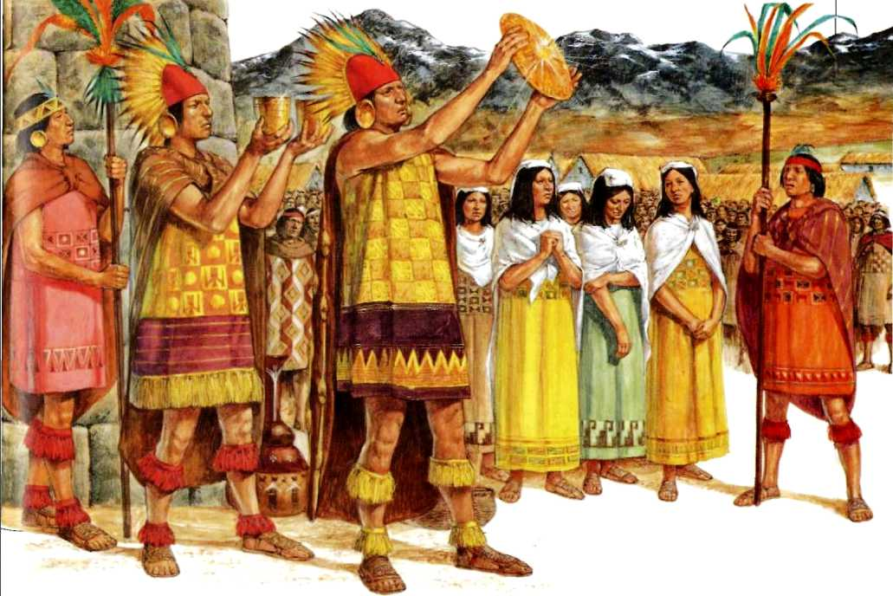
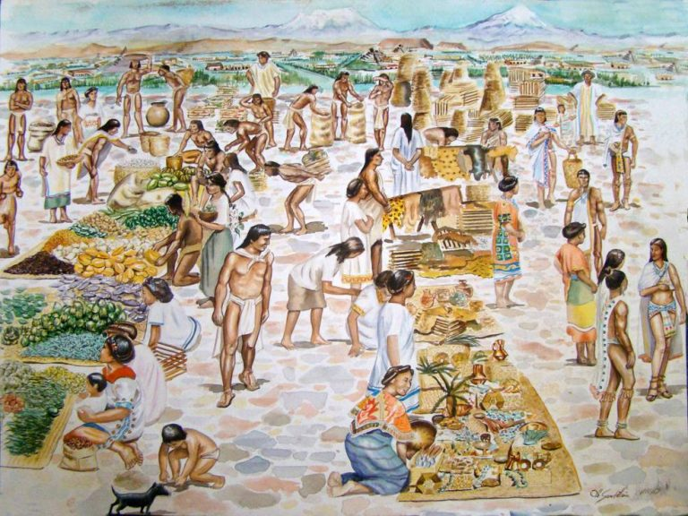

Quem leu o céu
Povos originários da América Latina
Quatro civilizações que, em territórios distintos, construíram leituras profundas do firmamento.

Brasil · Paraguai · Argentina
Tupi-Guarani
Povos do litoral e das florestas que leram o céu pelas estações.
Identificaram constelações como a Ema Celeste, o Homem Velho e o Cervo do Pantanal. O surgimento das Plêiades (Eixu) ao amanhecer marca o ano novo Guarani e o início do tempo das águas. Quando tratamos dos Tupi-Guarani, nos referimos à uma família linguística, o que engloba vários povos com suas próprias particularidades, mitos e calendários. Ou seja, não existe um único “povo tupi”, mas sim um conjunto de etnias que compartilham origens e laços linguísticos. Curiosidade: “Tupi” frequentemente é traduzido como “grande pai”.

Cordilheira dos Andes
Inca / Quechua
Astrônomos das alturas que ergueram observatórios em pedra.
Reconheciam constelações claras e escuras, como a Yacana (lhama) e o Hampatu (sapo), formadas pelas nuvens de poeira da Via Láctea. Inti Raymi celebra o solstício de inverno em Cusco.

México · Guatemala · Belize · Honduras
Maya
Matemáticos do tempo, mestres do calendário e de Vênus.
Desenvolveram o calendário Tzolk'in (260 dias) e o Haab' (365 dias), além de prever eclipses e ciclos de Vênus com precisão. O observatório El Caracol, em Chichén Itzá, alinha-se aos movimentos de Vênus.
Sul do Chile e Argentina
Mapuche
Guardiões do céu austral, com seu próprio ano novo estelar.
We Tripantu, o ano novo Mapuche, ocorre no solstício de inverno (junho) e está ligado ao retorno do sol. As Plêiades (Ngauponi) anunciam a nova temporada agrícola.